高雄・洛杉磯現場活動 ＋ 全球活動
Pokémon GO Tour 2027：阿羅拉
Pokémon GO Tour 2027 的舞台是《太陽／月亮》與《究極之日／究極之月》的阿羅拉地區。現場活動 2027 年 2 月 19～21 日在台灣高雄與美國洛杉磯同時舉辦，隔週 2 月 27～28 日是全世界都能參加的全球活動。官方目前只公布了日期與地點，入場券會在下個季節開賣，詳細內容（登場寶可夢、會場、時段、票價）公布後這頁會持續更新。
三場活動對照
官方 2026/9/24 公告的內容只有日期、地點與阿羅拉主題；會場、每日時段、票價與活動內容都還沒公布。
時程
- 2026/9/24活動官方公布 GO Tour 2027 日期與地點主題阿羅拉；現場活動在高雄、洛杉磯，另有全球活動。
- 下個季節日期尚未公布活動入場券開賣、公布活動細節現場與全球活動的入場券預計在下個季節開放購買，同時公布更多內容。
- 2027/2/19–2/21時段尚未公布活動現場活動：高雄、洛杉磯
- 2027/2/27–2/28時段尚未公布活動全球活動為 GO Tour 2027 畫下句點，世界各地都能參加。
目前知道的事
阿羅拉地區
以《精靈寶可夢 太陽／月亮》與《究極之日／究極之月》的舞台阿羅拉為主題；登場寶可夢與特別內容官方尚未公布。
高雄現場活動
2027 年 2 月 19～21 日在高雄舉辦，與洛杉磯同一週末。去年的 GO Tour：卡洛斯在台南舉辦，今年換到高雄。
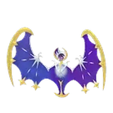
IV100 CP 2310全球活動在隔週
2 月 27～28 日的全球活動是 GO Tour 2027 的壓軸，不用到現場也能參加。
還在等官方公布的
會場位置、每日時段、入場券價格與開賣日、登場寶可夢、特殊調查與加成內容。公布後這頁會更新，也可以先把頁面加入書籤。
 阿羅拉寶可夢圖鑑
阿羅拉寶可夢圖鑑
阿羅拉地區的寶可夢（#722～#809）與阿羅拉的樣子，先認識一下。按「顯示異色」可以看異色長相；這只是圖鑑，不代表活動會出現、也不代表遊戲裡已經能抓到異色。
御三家
阿羅拉的樣子關都寶可夢的地區形態
- 阿羅拉小拉達IV100 CP 419
- 阿羅拉拉達IV100 CP 974
- 阿羅拉雷丘IV100 CP 1306

 阿羅拉穿山鼠IV100 CP 739
阿羅拉穿山鼠IV100 CP 739- 阿羅拉穿山王IV100 CP 1390
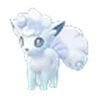
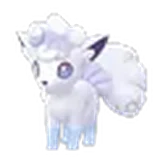
阿羅拉六尾IV100 CP 504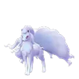
阿羅拉九尾IV100 CP 1319- 阿羅拉地鼠IV100 CP 389

 阿羅拉三地鼠IV100 CP 1084
阿羅拉三地鼠IV100 CP 1084- 阿羅拉喵喵IV100 CP 455
- 阿羅拉貓老大IV100 CP 1012
- 阿羅拉小拳石IV100 CP 739
- 阿羅拉隆隆石IV100 CP 1084
- 阿羅拉隆隆岩IV100 CP 1685
- 阿羅拉臭泥IV100 CP 785
- 阿羅拉臭臭泥IV100 CP 1575
- 阿羅拉椰蛋樹IV100 CP 1722
- 阿羅拉嘎啦嘎啦IV100 CP 1048
守護神卡璞
傳說的寶可夢
究極異獸
幻之寶可夢

其他阿羅拉寶可夢
- 小篤兒IV100 CP 520
- 喇叭啄鳥IV100 CP 844
- 銃嘴大鳥IV100 CP 1536
- 貓鼬少IV100 CP 502
- 貓鼬探長IV100 CP 1248
- 強顎雞母蟲IV100 CP 562
- 蟲電寶IV100 CP 970
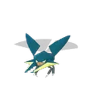
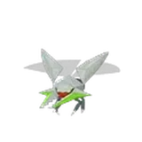
鍬農炮蟲IV100 CP 1781- 好勝蟹IV100 CP 778
- 好勝毛蟹IV100 CP 1661
- 花舞鳥IV100 CP 1333
- 萌虻IV100 CP 507
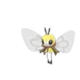
蝶結萌虻IV100 CP 1257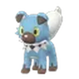
岩狗狗IV100 CP 543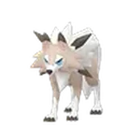
鬃岩狼人IV100 CP 1530- 弱丁魚IV100 CP 198
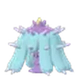
好壞星IV100 CP 555- 超壞星IV100 CP 963
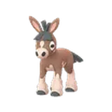
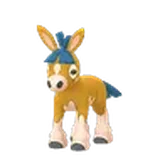
泥驢仔IV100 CP 1081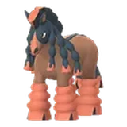
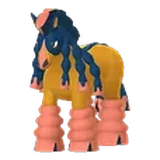
重泥挽馬IV100 CP 1740- 滴蛛IV100 CP 408
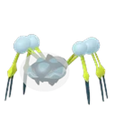
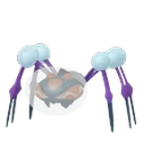
滴蛛霸IV100 CP 1044- 偽螳草IV100 CP 423
- 蘭螳花IV100 CP 1370
- 睡睡菇IV100 CP 590
- 燈罩夜菇IV100 CP 1063
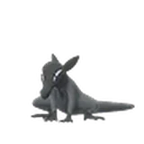
夜盜火蜥IV100 CP 641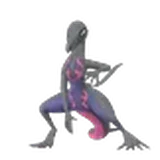
焰后蜥IV100 CP 1416- 童偶熊IV100 CP 772
- 穿著熊IV100 CP 1781
- 甜竹竹IV100 CP 268
- 甜舞妮IV100 CP 432
- 甜冷美后IV100 CP 1693
- 花療環環IV100 CP 1209
- 智揮猩IV100 CP 1400
- 投擲猴IV100 CP 1733
- 膽小蟲IV100 CP 286
- 具甲武者IV100 CP 1807

 沙丘娃IV100 CP 705
沙丘娃IV100 CP 705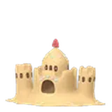
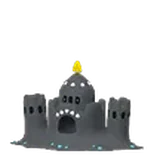
噬沙堡爺IV100 CP 1396- 拳海參IV100 CP 784

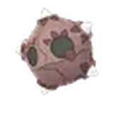
小隕星IV100 CP 1310- 樹枕尾熊IV100 CP 1475

 爆焰龜獸IV100 CP 1270
爆焰龜獸IV100 CP 1270
 托戈德瑪爾IV100 CP 1234
托戈德瑪爾IV100 CP 1234- 謎擬ＱIV100 CP 1271
- 磨牙彩皮魚IV100 CP 1365
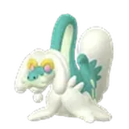
老翁龍IV100 CP 1665
 破破舵輪IV100 CP 1685
破破舵輪IV100 CP 1685- 心鱗寶IV100 CP 553
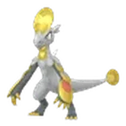
鱗甲龍IV100 CP 963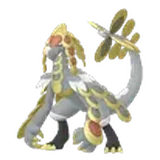
杖尾鱗甲龍IV100 CP 1890
 攻略重點
攻略重點
- 先存星星沙子與糖果
GO Tour 通常會有大量新寶可夢與強化需求，活動前幾個月就開始存星沙、留神奇糖果，到時候比較不會卡關。
- 整理寶可夢盒與道具包
活動期間抓得又多又快，提前清出寶可夢盒與道具包空間，必要時擴充。
- 要去高雄的話先規劃交通住宿
會場還沒公布，但 2 月是旅遊旺季，確定要去就先留意住宿與高鐵、機票；會場公布後再挑附近的住處。
- 準備行動電源與防曬
現場活動一走就是一整天，行動電源、補水與防曬都要備好。
- 注意入場券開賣時間
入場券預計在下個季節開賣；請只透過遊戲內或官方 Web Store 購買，小心來路不明的代購。
 常見問題
常見問題
Pokémon GO Tour 2027 什麼時候？
現場活動 2027 年 2 月 19～21 日（高雄、洛杉磯），全球活動 2 月 27～28 日。
高雄的會場在哪裡？
官方目前只公布在高雄舉辦，會場位置尚未公布。
入場券多少錢？什麼時候開賣？
官方表示現場與全球活動的入場券會在下個季節開賣，價格尚未公布。
不去高雄也能參加嗎？
可以。2 月 27～28 日的全球活動世界各地都能參加。
會出現哪些寶可夢？
主題是阿羅拉地區，但登場寶可夢與活動內容官方尚未公布，公布後會更新在這頁。